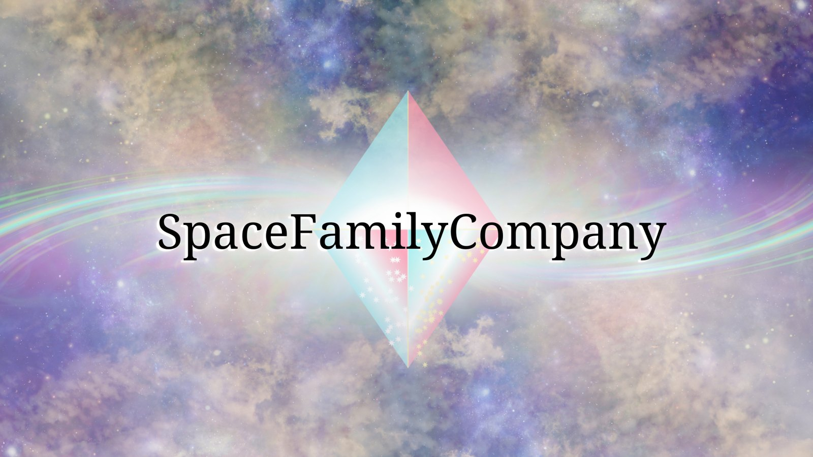
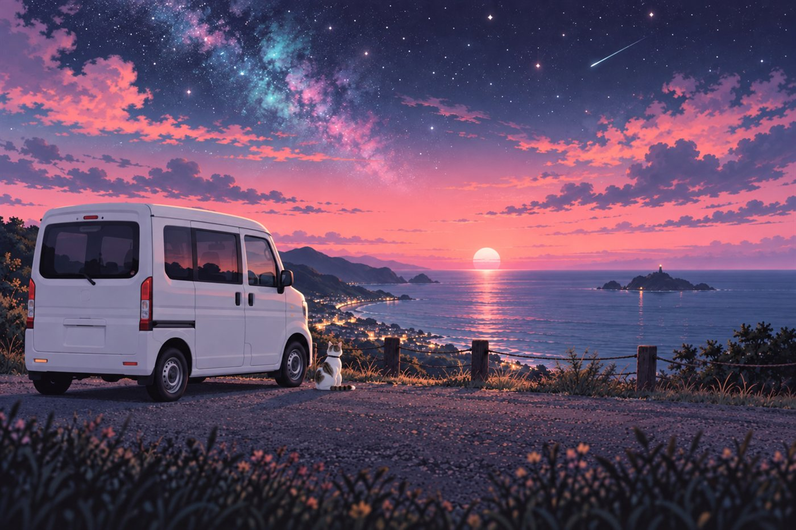
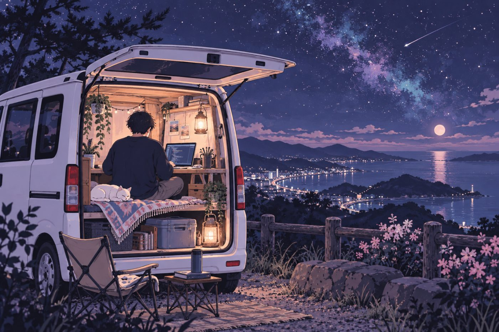

使っていないAndroidタブレット
パソコンの、指で触れる第2画面に
無線でパソコンの画面を映し、タッチでそのまま操作できます。2台同時にも対応。
サブモニターくん運用中

どこにいても
つくれる。
きっと、だれかの役に立つ。

イラスト小さな団体の困りごとは、大きなシステムでは解決しません。いまのやり方に合わせて、ちょうどいい大きさの仕組みをつくります。
使わなくなったタブレット、古いパソコン、余ったスマホ。捨てる前に見せてください。中身を入れ替えて、現場で働く道具にします。
使っていないAndroidタブレット
無線でパソコンの画面を映し、タッチでそのまま操作できます。2台同時にも対応。
機種変更で余ったスマホ
トラックパッド、日本語入力、ワンタップのボタン盤。Android 8以降なら、数年前の機種でも動きます。
10年以上前のタブレットPC
第3世代Core i5・メモリ4GBの端末が対象。電源を入れるとこのアプリだけが立ち上がり、ネットがなくても使えます。
机の上だけで考える開発者とは、ここが違います。

イラスト所長は軽バンのN-VANに白キジ猫のトムを乗せ、宮崎、長崎、大阪、千葉、新潟と拠点を移しながら開発しています。「全国対応」は言葉だけではありません。オンラインで完結しつつ、旅の途中なら直接うかがうこともできます。
所長について読む倉庫、古民家の改修、ロボットの搬送。所長自身が作業着で現場に立っています。紙と電話で回る仕事の大変さを、体で知った上で道具をつくります。
まず自分の困りごとを解決し、毎日使って確かめてから外へ出す。この順番で、スマホアプリ、車載ディスプレイ、チャットBot、配信システムまで、17号機の開発を重ねてきました。
ITを社会のしくみにたとえて解説する本『社会で学ぶIT』を執筆しています（第1巻『プログラムは会社である』）。職員向けの勉強会もこの調子で行います。費用も「月50回使ったら約○円」のように、使い方に合わせて先にお伝えします。お金をかけずに済む方法があれば、そちらから提案します。
NPO法人の年次報告と行政への提出を、締め切り直前まで伴走した経験があります。会員数、事業の記録、会計の数字。どこでつまずくかを知った上で、仕組みをつくります。
なぜそう作ったか、どう設定したかを引き継ぎ資料に残してお渡しします。担当者が替わっても、仕組みと記録は団体に残ります。次の改善も、その記録から始められます。
ボタンの位置、通知の一文、紙から移すときの手間。使われない道具は細部で負けています。そこを一つずつ詰めるのが、研究所の決まりごとです。
地方の困りごとを、一緒に発明で片付けませんか。開発、デザイン、現場の知恵。オンライン中心で、全国どこからでも関われます。
「こんなこと頼んでいいのかな」の段階で大丈夫です。いちばん早いのはLINEです。相談から納品までオンラインで完結するので、全国どこからでも依頼できます。相談と見積もりは無料、当日～3日以内にお返事します。